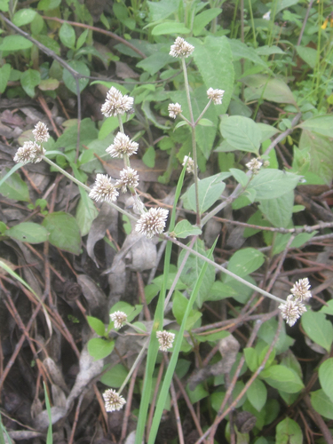
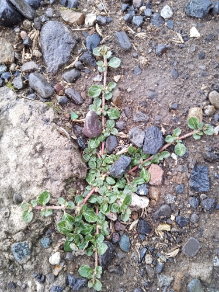

Amaranthaceae
Alternanthera porrigens (Jacq.) Kuntze
Publicado por primera vez en Kuntze. (1891). Revis. Gen. Pl. 2: 538 (1891).

Indexaciones: Catalogue of Life, GBIF, iNaturalist, World Flora Online, The Plant List, IPNI.
Nombres comunes: Moradilla, moradilla blanca, moradilla morada, moradilla rosada, troturo, verbena de monte; 千日小坊 (jpn-jp); 紫花蓮子草 (zho).
Clasificación taxonómica
Dominio: Eukaryota (Chatton, 1925) Whittaker & Margulis, 1978 > Reino: Plantae > Subreino: Pteridobiotina Britton & Brown > Filo: Tracheophyta > Clase: Magnoliopsida > Orden: Caryophyllales Juss. ex Bercht. & J.Presl > Familia: Amaranthaceae Juss. > Subfamilia: Amaranthoideae Burnett > Tribu: Gomphreneae Fenzl > Género: Alternanthera Forssk. > Especie: Alternanthera porrigens (Jacq.) Kuntze
Sinónimos y combinaciones:
Sinónimos homotípicos (combinaciones):
- Achyranthes porrigens Jacq.
- Brandesia porrigens (Jacq.) Mart.
- Telanthera porrigens (Jacq.) Endl.
- Telanthera porrigens (Jacq.) Moq.
Sinónimos heterotípicos:
- Achyranthes bangii (Rusby) Standl.
- Achyranthes purpurea Pav. ex Moq.
- Alternanthera bangii Rusby ex Bol.
- Alternanthera elongata var. nigriceps (Hook.) Suess.
- Alternanthera gomphrenoides Kunth
- Alternanthera junciflora (J.Rémy) I.M.Johnst.
- Alternanthera nigriceps Hook.
- Alternanthera nigripes Steud.
- Alternanthera paniculata Kunth
- Alternanthera porrigens var. porrigens
- Celosia elongata Spreng.
- Celosia peruviana Zuccagni
- Gomphrena fruticosa Moq.
- Gomphrena fulgens Moq.
- Gomphrena purpurea Moq.
- Gomphrena trichotoma Moq.
- Illecebrum gomphrenoides (Kunth) Willd. ex Roem. & Schult.
- Illecebrum paniculatum (Kunth) Spreng.
- Illecebrum sericeum (Kunth) Spreng.
- Mogiphanes paniculata Rusby
- Telanthera bangii Rusby
- Telanthera elongata var. nigriceps (Hook.) Moq.
- Telanthera gomphrenoides (Kunth) Moq.
- Telanthera gomphrenoides var. ovata Moq.
- Telanthera junciflora J.Rémy
- Telanthera luzuloides Moq.
- Telanthera paniculata (Kunth) Moq.
- Telanthera rivetii Danguy & Cherm.
Distribución
Alternanthera porrigens (Jacq.) Kuntze ha sido registrada en las siguientes áreas geográficas:
Jawa [I]; Colombia (Boyacá, Cauca, Cesar, Cundinamarca, Magdalena, Nariño, Norte de Santander, Putumayo, Santander); Ecuador; Peru; Bolivia (Chuquisaca, Cochabamba, Potosí, Santa Cruz, Tarija); Chile (Arica y Parinacota, Tarapacá, Antofagasta, Atacama, Valparaíso).
Referencias:
- Danguy & Cherm. (1922). Bull. Mus. Natl. Hist. Nat. 28: 438 (1922).
- Endl. (1842). Cat. Horti Vindob. 1: 265 (1842).
- Hook. (1831). Bot. Misc. 2: 237 (1831).
- I.M.Johnst. (1929). Contr. Gray Herb. 85: 32 (1929).
- Jacq. (1798). Pl. Rar. Hort. Schoenbr. 3: 54 (1798).
- Kunth. Nov. Gen. Sp.
- Kuntze. (1891). Revis. Gen. Pl. 2: 538 (1891).
- Mart. Beitr. Amarantac. 106 (1825).
- Moq. Prodr.
- Pav. ex Moq. Prodr.
- Rusby ex Bol. (1940). Bol. Mus. Hist. Nat. Javier Prado 4: 200 (1940).
- Rusby. (1896). Mem. Torrey Bot. Club 6: 110 (1896).
- Rusby. (1910). Bull. New York Bot. Gard. 6: 503 (1910).
- Rémy, J. Fl. Chil.
- Spreng. J. Bot.
- Spreng. Syst. Veg., ed. 16.
- Standl. (1915). J. Wash. Acad. Sci. 5: 74 (1915).
- Steud. Nomencl. Bot.
- Suess. (1934). Repert. Spec. Nov. Regni Veg. 35: 299 (1934).
- Willd. ex Roem. & Schult. Syst. Veg., ed. 15bis.
- Zuccagni. Cent. Observ. Bot.
Susceptibilidad de uso y aprovechamiento sostenible
Medicinal:
- La flor, en infusión, se bebe para tratar cólicos.
- Se usa como expectorante y para tratar afecciones hepáticas y renales.
- La flor se usa para tratar la tos.
- La flor en infusión, se toma como emenagogo.
- La horchata se usa como diurético.
- La horchata se bebe, en cocción junto con “ataco” (Amaranthus sp.), una rama de ruda (Ruta graveolens), flores de alfalfa (Medicago sativa), azúcar y alcohol de caña, durante la menstruación.
- La infusión de la flor y hojas, mezclada con toronjil y manzanilla, se bebe para tratar el dolor de riñones.
- La infusión de la planta detiene el sangrado de las mujeres después del parto.
- La infusión de la planta sola o mezclada con taraxaco, llantén escancel, caballo chupa, y calaguala, se usa para tratar afecciones del hígado y riñones, así como para regular la menstruación y para aliviar malestares femeninos.
- La planta, en infusión junto con otras especies, se usa para regular la menstruación.
- La raíz se usa para curar la diabetes.
- La planta, en infusión, se usa para tratar afecciones del hígado y de los riñones.
- Las hojas machacadas con agua se ingieren para tratar los dolores de cabeza causados por el frío.
- Es cicatrizante.
- Para detener las hemorragias.
- Se dice que el zumo puede curar el cáncer.
- Las hojas se aplican en un emplasto para aliviar golpes.
- Para tratar afecciones indeterminadas.
Social:
- Se usa para limpiar el “mal aire” y curar el “espanto”.
- Junto con Guilleminea densa, Amaranthus hybridus, Margyricarpus pinnatus, Asplenium monanthes y Muehlenbeckia tamnifolia, es útil para las mujeres después del parto como lavador de sangre.
Amaranthus caudatus L.
Publicado por primera vez en L. (1753). Sp. Pl. [Linnaeus] 2: 990 (1753).
Indexaciones: Catalogue of Life, GBIF, iNaturalist, World Flora Online, The Plant List.
Nombres comunes: Alegría, achita, bledo francés, kiwicha, laskavec ocasatý, longus rebashein, quilete, trigo del Inca; Amarant, Inca-wheat, Love Lies Bleeding, foxtail, foxtail amaranth, love-lies-bleeding, purple amaranth, red-hot-cattail, tassel-flower, velvet-flower (eng); Amaranto coda rossa (ita); Garten-Amarant, Gartenfuchsschwanz, Inkaweizen (deu); Garten-Amarant (DE); Love-lies-bleeding (EN); Moco de pavo (ES) (lengua no especificada); Garten-Fuchsschwanz (deu-germany | austria); Kattenstaartamarant (nld); Mari Waedlyd (cym); Moțul curcanului (ron); Pyšny šćěrjenc (hsb); Quihuicha (kichwa); Rabo-de-gato, moncos-de-Peru (por); Röd amarant, rävsvans (swe-se); Szarłat ogrodowy, Szarłat zwisły (pol); Süpürgəvarı qaratərə (aze); Uodegotasis burnotis (lit); Uzunibik (tur); amarante caudée, amarante queue-de-renard, discipline des religieux, queue de renard (fra); amarantu (ast); bókoló disznóparéj (hun); himo-geitō, sennin-koku, ヒモゲイトウ (jpn); jataco (hin); julmaendeurami (kor); kef alemhena (ara); lao qiang gu, 尾穗苋, 尾穗莧, 老枪谷, 老枪谷叶, 老枪谷子, 老枪谷根 (zho); láskavec chvostnatý (slk); punarevonhäntä (fin); purmanov žnoder, repati ščir (slv); reveamarant (nob-no); Αμάρανθος ο ουροφόρος (ell); Щирица хвостатая (rus); Щириця хвостата (ukr); بستانافروز (fas); ރަތް މައްސާގު (div); राजगिरा (mar); ผักโขมใบแดง (tha); ሊሻሊሾ (amh); センニンコク (jpn-jp); 줄맨드라미 (kor-kr).
Clasificación taxonómica
Dominio: Eukaryota (Chatton, 1925) Whittaker & Margulis, 1978 > Reino: Plantae > Subreino: Pteridobiotina Britton & Brown > Filo: Tracheophyta > Clase: Magnoliopsida > Orden: Caryophyllales Juss. ex Bercht. & J.Presl > Familia: Amaranthaceae Juss. > Subfamilia: Amaranthoideae Burnett > Tribu: Amarantheae Rchb. > Género: Amaranthus L. > Especie: Amaranthus caudatus L.
Sinónimos y combinaciones:
Sinónimos homotípicos (combinaciones):
- Amaranthus hybridus subsp. caudatus (L.) Iamonico & Galasso
- Amaranthus paniculatus var. caudatus (L.) Jess.
Sinónimos heterotípicos:
- Amaranthus abyssinicus L.H.Bailey
- Amaranthus alopecurus Hochst. ex A.Br. & Bouché
- Amaranthus baileyanus Iamonico
- Amaranthus cararu Moq.
- Amaranthus caudatus f. alopecurus (Moq.) Thell.
- Amaranthus caudatus f. maximus (Mill.) A.Braun & C.D.Bouché
- Amaranthus caudatus subsp. caudatus
- Amaranthus caudatus subsp. mantegazzianus (Pass.) Hanelt
- Amaranthus caudatus subsp. saueri V.Jehlík
- Amaranthus caudatus var. albiflorus Moq.
- Amaranthus caudatus var. alopecurus Moq.
- Amaranthus caudatus var. caudatus
- Amaranthus caudatus var. gibbosus L.H.Bailey
- Amaranthus caudatus var. maximus (Mill.) Corrie
- Amaranthus caudatus var. maximus (Mill.) Moq.
- Amaranthus caudatus var. pendulinus (Regel) Thell.
- Amaranthus dussii Sprenger
- Amaranthus edulis Speg.
- Amaranthus edulis var. spadiceus Hunz.
- Amaranthus mantegazzianus Pass.
- Amaranthus mategazzianus Passerini
- Amaranthus maximus Mill.
- Amaranthus pendulinus Moq.
- Amaranthus pendulus Moq.
- Euxolus arvensis Rojas Acosta
Distribución
Amaranthus caudatus L. ha sido registrada en las siguientes áreas geográficas:
England [I] (England [I], Wales [I], Isle of Man [I], Isles of Scilly [I]); Germany [I]; Czech Republic [I]; Slovakia [I]; Hungary [I]; France [I]; Channel Isl. [I] (Jersey [I]); Italy [I]; Sicily [I]; Malta [I]; Slovenia [I]; Croatia [I]; Bosnia & Hercegovina [I]; Montenegro [I]; European Turkey [I]; Greece [I]; Crete [I]; Belarus [I]; European Russia [I]; Moldova [I]; Crimea [I]; Morocco [c]; Algeria [c]; Egypt [I] (Desert Oases [I], NE-Egypt [I], Nile Delta [I], Nile Valley [I], NW-coastal Egypt [I], SE-Egypt [I]); Madeira [I] (Madeira Isl. [I]); Canary Isl. [I] (Gran Canaria [I], Tenerife [I]); Cape Verde Isl. [I] (Santo Antao Isl. [I], Sao Vicente Isl. [I], Ilha de Sao Nicolau [I], Ilha da Boa Vista [I], Ilha de Sao Tiago [I]); Cameroon [I]; São Tomé [I]; Central African Republic [I]; Sudan [I]; Angola [I]; Mozambique [I]; Namibia [I]; South Africa [I]; Mauritius [I]; La Réunion [I]; Russian Far East [I] (Primorye [I]); Kazakhstan [I]; Uzbekistan [I]; Tajikistan [I]; Georgia [Caucasus] [I]; East Aegaean Isl. [I] (incl. Rhodos [I]); Iran [I] (NE-Iran: Mts. [I]); Afghanistan [I]; Sinai peninsula [I] (S-Sinai [I]); Saudi Arabia [I] (C-Saudi Arabia [I], N-Saudi Arabia [I], Asir [I]); Qatar [I]; Yemen [I] (N-Inner Yemen [I], SW-Yemen [I], Tihama [I], W-Yemen [I]); China [I]; South Korea [I]; Japan [I]; Ryukyu Isl. [I]; Taiwan [I]; Pakistan [I] (Baluchistan [I], Baltistan [I]); Nepal [c]; India [I] (throughout); Maldives [I]; Sri Lanka [I]; Bangladesh [I]; Myanmar [I]; Thailand [I]; Vietnam [I]; peninsular Malaysia [I]; Philippines [I]; Jawa [I]; New Guinea [I]; Australia [I] (Western Australia [I], South Australia [I], Queensland [I], Victoria [I], New South Wales [I]); New Zealand [I]; New Caledonia [I]; Tonga [I] (Vava’u [I]); Tuamotu Arch. [I] (Makatea Isl. [I]); USA [I] (Arizona [I], California [I], Connecticut [I], Delaware [I], Florida [I], Idaho [I], Illinois [I], Kansas [I], Massachusetts [I], Maine [I], Michigan [I], Minnesota [I], Missouri [I], Montana [I], New York [I], Oregon [I], Pennsylvania [I], Tennessee [I], Virginia [I], Vermont [I], Washington State [I], Wisconsin [I]); Mexico [I]; Belize [I]; Honduras [I]; Costa Rica [I]; Cuba [I]; Puerto Rico [I]; Virgin Isl. [I] (Tortola [I]); Martinique [I]; St. Vincent [I]; Barbados [I]; Trinidad & Tobago [I]; Colombia [I]; Surinam [I]; French Guiana [I]; Ecuador; Galápagos; Peru; Bolivia (Chuquisaca, La Paz, Potosí, Tarija); Brazil [I].
Referencias:
- Bailey, L. H. (1914). Stand. Cycl. Hort. 1: 270 (1914).
- Bailey, L. H. Man. Cult. Pl. 252 (1924).
- Braun, A., & Bouché, C. D. (1873). Append. Obs. Bot. Ind. Sem. Hort. Berol. 1872: 1 (1873).
- Corrie. Miller’s Dict. Gard. 182 (1834).
- Dyntaxa. Svensk taxonomisk databas
- Editorial Committee of the Red List of Taiwan Plants
- FNA Editorial Committee. 2003. Flora of North America north of Mexico. Volume 4: Magnoliophyta: Caryophyllidae, part 1. Oxford University Press, New York. http://www.efloras.org/volume_page.aspx?volume_id=1004&flora_id=1
- Hanelt. (1968). Kulturpflanze 16: 128 (1968).
- Hochst. ex A.Br. & Bouché. Index Sem. (Berlin) App. (1872) 1.
- Hunz. (1943). Revista Argent. Agron. 10: 330 (1943).
- Iamonico, & Galasso. (2017). Ital. Botanist 4: 34 (2017).
- Iamonico. Plants.
- Jehlík, V. (1990). Preslia 62(2): 164 (1990).
- Jess. Deut. Excurs.-Fl. 295 (1879), nom. illeg.
- L. (1753). Sp. Pl. [Linnaeus] 2: 990 (1753).
- Mill. (1768). Gard. Dict., ed. 8: no. 5 (1768).
- Moq. Prodr.
- Pass. Hort. Parm. 4 (1864).
- Prodr. 13(2): 256 1849
- Rojas Acosta. Cat. Hist. Nat. Corrientes 78, 176 (1897).
- Speg. (1917). Physis (Buenos Aires) 3: 163 (1917).
- Sprenger. (1896). Bull. Soc. Tosc. Ortic. 21: 178 (1896).
- Suomen Lajitietokeskus. https://laji.fi
- TelaBotanica 2000-2009+. Flore électronique. France métropolitaine. http://www.tela-botanica.org http://www.tela-botanica.org/
- Thell. Syn. Mitteleur. Fl.
- USDA Agriculture Research Service (ARS). 2010+. Germplasm Resources Information Network (GRIN). USDA Agriculture Research Service (ARS), National Genetic Resources Program. National Germplasm Resources Laboratory, Beltsville, Md. http://www.ars-grin.gov/npgs/index.html http://www.ars-grin.gov/npgs/index.html
- Yonekura, K., & Kajita, T. (2003). BG Plants Wamei-Gakumei Index. (http://ylist.info/index.html)
Susceptibilidad de uso y aprovechamiento sostenible
Alimenticio:
- El fruto es comestible, se usa para preparar la colada morada, bebida típica consumida durante el día de los difuntos.
Aditivo de los alimentos:
- Las flores se usan como colorante de coladas (como la colada morada), de cremas y comidas dulces.
- Las hojas sirven como condimento.
Materiales:
- Con las espigas florales, molidas, se tiñe el agua utilizada para bañar a la gente en época de carnaval.
- Sirve para lavarse la piel.
Social:
- La infusión de la planta se bebe para purificar la sangre.
Medicinal:
- En forma de bebidas o brebajes, se administra después del parto, como purgante.
- La flor, en infusión, se bebe para regular la sangre.
- La infusión de la planta, junto con “maihua”, “piki yuyu”, retama y caballo chupa, se usa para eliminar parásitos intestinales.
- La infusión de las semillas se bebe para tratar afecciones renales.
- La planta entera, en infusión, se usa para tratar espinillas y manchas en la piel.
- Las hojas en infusión se usan para tratar problemas del corazón.
- La infusión de las hojas es astringente y útil para tratar la diarrea, disentería, hemorragias e irritaciones de la garganta.
- Es carminativo.
- Utilizada para tratar inflamaciones corporales, gastritis y afecciones en las vías urinarias, del hígado y de los riñones.
- En infusión, beneficia la circulación de la sangre.
- Tiene propiedades astringentes y se usa para tratar la excesiva menstruación, irritaciones de boca y garganta, cólicos, diarreas, disentería y hemorragias intestinales.
Amaranthus asplundii Thell.
Publicado por primera vez en Thell.
Indexaciones: Catalogue of Life, GBIF, iNaturalist, World Flora Online, The Plant List.
Nombres comunes: 雅氏莧 (zho).
Clasificación taxonómica
Dominio: Eukaryota (Chatton, 1925) Whittaker & Margulis, 1978 > Reino: Plantae > Subreino: Pteridobiotina Britton & Brown > Filo: Tracheophyta > Clase: Magnoliopsida > Orden: Caryophyllales Juss. ex Bercht. & J.Presl > Familia: Amaranthaceae Juss. > Subfamilia: Amaranthoideae Burnett > Tribu: Amarantheae Rchb. > Género: Amaranthus L. > Especie: Amaranthus asplundii Thell.
Distribución
No se encontraron registros de distribución geográfica documentados en Catalogue of Life para Amaranthus asplundii Thell..
Referencias:
- Thell.
Susceptibilidad de uso y aprovechamiento sostenible
Alimenticio:
- El fruto y las hojas tiernas son comestibles, se usan en la preparación de coladas, ensaladas y morcillas de chancho.
Medicinal:
- El zumo de la raíz machacada se usa para tratar el malestar producido por los cólicos.
- La flor en infusión y mezclada con aguardiente, se usa para tratar el resfrío.
- La infusión de la raíz se bebe para tratar el colerín.
- La raíz machacada se usa para tratar la holanda (enfermedad causada por un virus), ampollas e inflamaciones en la boca.
- Es carminativa.
- La decocción de la raíz se bebe para tratar la diarrea en los niños.
Susceptibilidad de uso y aprovechamiento sostenible
Alimenticio:
- Las hojas son comestibles, se consumen fritas con maní, en encurtidos y en ensaladas.
Aditivo de los alimentos:
- La flor y las hojas se usan como colorante en la preparación de la colada morada, durante la fiesta de los difuntos.
- Se mezcla con harina de maíz negro y se fermenta.
- Se usa como colorante de mermeladas, como condimento y para preparar embutidos de cerdo (morcillas).
Materiales:
- La flor hervida y mezclada con “puma maki”, se usa como tinte.
Social:
- La planta en infusión, se usa para limpiar la sangre.
- Junto con Guilleminea densa, Alternanthera porrigens, Margyricarpus pinnatus, Asplenium monanthes y Muehlenbeckia tamnifolia, es útil para las mujeres después del parto como lavador de sangre.
Medicinal:
- La planta entera en infusión, se usa para tratar ataques.
- La planta entera en infusión, se usa para controlar los nervios.
- La planta entera en infusión, se usa para purgar a las personas que tienen muchos granos y espinillas.
- Es carminativo.
- Útil para regular la menstruación.
- Se emplea para tratar afecciones del corazón.
- La infusión de la planta se toma con miel para tratar la “inflamación del frío”.
- Es utilizada para tratar la diarrea.
- Es utilizada para purgar a fin de limpiar el sistema digestivo.
Guilleminea densa (Willd.) Moq.
Publicado por primera vez en Moq. (1849). Prodr. [A.P. de Candolle] 13: It. 338 (1849).

Indexaciones: Catalogue of Life, GBIF, iNaturalist, World Flora Online, The Plant List, IPNI.
Nombres comunes: Bola de hilo; Carrot Weed (eng); Intando yengulube, Intanndo yengulube (zul); Small matweed (lengua no especificada); mohulapitse (tsn).
Clasificación taxonómica
Dominio: Eukaryota (Chatton, 1925) Whittaker & Margulis, 1978 > Reino: Plantae > Subreino: Pteridobiotina Britton & Brown > Filo: Tracheophyta > Clase: Magnoliopsida > Orden: Caryophyllales Juss. ex Bercht. & J.Presl > Familia: Amaranthaceae Juss. > Subfamilia: Amaranthoideae Burnett > Tribu: Gomphreneae Fenzl > Género: Guilleminea Kunth > Especie: Guilleminea densa (Willd.) Moq.
Sinónimos y combinaciones:
Sinónimos heterotípicos:
- Achyranthes conferta Pav. ex Moq.
- Achyranthes conferta Ruiz ex Seub.
- Brayulinea australis (Griseb.) Schinz
- Brayulinea densa (Humb. & Bonpl. ex Schult.) Small
- Gossypianthus australis Griseb.
- Guilleminea australis (Griseb.) Hook.fil.
- Guilleminea densa var. densa
- Guilleminea densa var. humilis Mears
- Guilleminea illecebroides Kunth
- Guilleminea illecebrum Spreng.
- Illecebrum densum Willd. ex Roem. & Schult.
Distribución
Guilleminea densa (Willd.) Moq. ha sido registrada en las siguientes áreas geográficas:
Angola [I]; Zambia [I]; Zimbabwe [I]; Mozambique [I]; Namibia [I]; Botswana [I]; Botswana [I]; South Africa [I] (widespread); Lesotho [I]; Mauritius [I]; Australia [I] (South Australia [I], Queensland [I]); USA (Arizona, Colorado, Maryland, New Mexico, Oklahoma, Texas); Mexico (Aguascalientes, Chihuahua, Coahuila, Ciudad de Mexico, Durango, Guanajuato, Hidalgo, Jalisco, Mexico State, Michoacán, Nuevo León, Oaxaca, Puebla, Querétaro, San Luis Potosí, Sonora, Tamaulipas, Tlaxcala, Veracruz, Zacatecas); Colombia (Nariño, Valle); Ecuador; Peru; Bolivia (Chuquisaca, Cochabamba, La Paz, Potosí, Santa Cruz, Tarija); Paraguay (Alto Paraguay); Argentina (Catamarca, Córdoba, Corrientes, Argentina Distrito Federal, Formosa, Jujuy, Salta, Santa Fe, Tucumán).
Referencias:
- Fl. Bras. (Martius) 5(1): 223. 1875 [1 Mar 1875]
- Griseb. (1874). Abh. Königl. Ges. Wiss. Göttingen 19: 8 (1874).
- Hook.fil. Gen. Pl.
- Kunth. Nov. Gen. Sp.
- Mears. (1967). Sida 3: 143 (1967).
- Moq. (1849). Prodr. [A.P. de Candolle] 13: It. 338 (1849).
- Pav. ex Moq. Prodr.
- Schinz. Nat. Pflanzenfam.
- Small. Fl. S.E. U.S.
- South African National Biodiversity Institute. 2021. Botanical Database of Southern Africa (BODATSA) [offline dataset]. http://newposa.sanbi.org [Note that these data are not available at this URL as of 2021]
- Spreng. Syst. Veg., ed. 16.
- Willd. ex Roem. & Schult. Syst. Veg., ed. 15bis.
Susceptibilidad de uso y aprovechamiento sostenible
Medicinal:
- La infusión de la planta, en particular de las raíces, se usa para aliviar malestares femeninos y para regular la sangre.
- Junto con Alternanthera porrigens, Amaranthus hybridus, Margyricarpus pinnatus, Asplenium monanthes y Muehlenbeckia tamnifolia, es útil para las mujeres después del parto como lavador de sangre.